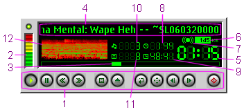

PM123's Main Window

This is PM123's main window on startup. The window has several controls
and lots of status information.
- From left to right: play/stop, pause, rewind,
fast forward, open/close playlist, load a file,
repeat mode, shuffle mode,
next song, previous
song and power off.
The playlist button will open a detailed view
of the currently loaded playlist, if any, or the default playlist
otherwise.
- Volume can be controlled clicking and dragging the volume
bar.
If you have to turn the volume quite low to sound significantly more
quietly try to enable the logarithmic volume
option in the configuration dialog of
OS2AUDIO.
- The slider can be dragged to navigate within the current
song. You can do this while not playing also to adjust the starting
position.
In playlist mode you you may navigate within the whole playlist by
pressing the Alt key. The exact behavior is adjusted in the properties dialog.
- While playing there are some status indicators. This is the current
song.
By double-clicking the title you may switch between the file name,
the song title and the technical info.
- This is the playing position within the current song.
If the time exceeds 99 Minutes the display switches to hours:seconds.
In this case the colon beween the numbers are always on and
instead of blinking.
When the time exceeds 99 Hours the display switches to days:hours.
In this case the colon are always off.
- The bitrate of the current song (if available).
- Stereo indicator.
- Remaining time of the current song.
- In playlist mode this is the remaining time of all items
(if available and finite).
- Absolute song number within the current playlist.
- The total number of songs in the current playlist. It
also includes songs in nested playlists.
- Here shows the visualization plug-in its ability.
Double-click here to switch between different views.
You can right click the player to open up the main menu.
Or you can use keyboard shortcuts.
The appearance of the player window can be changed significantly by
using alternate skins.